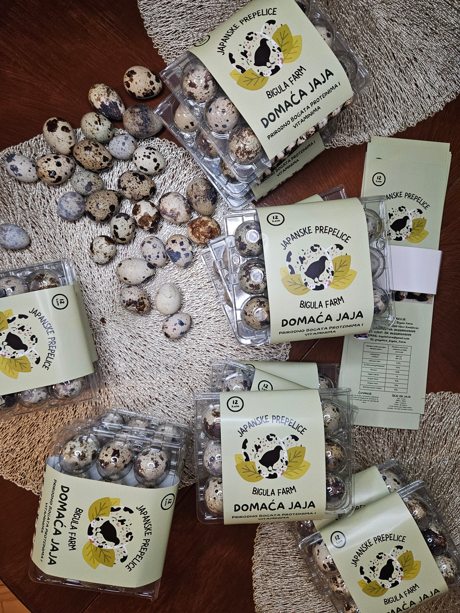
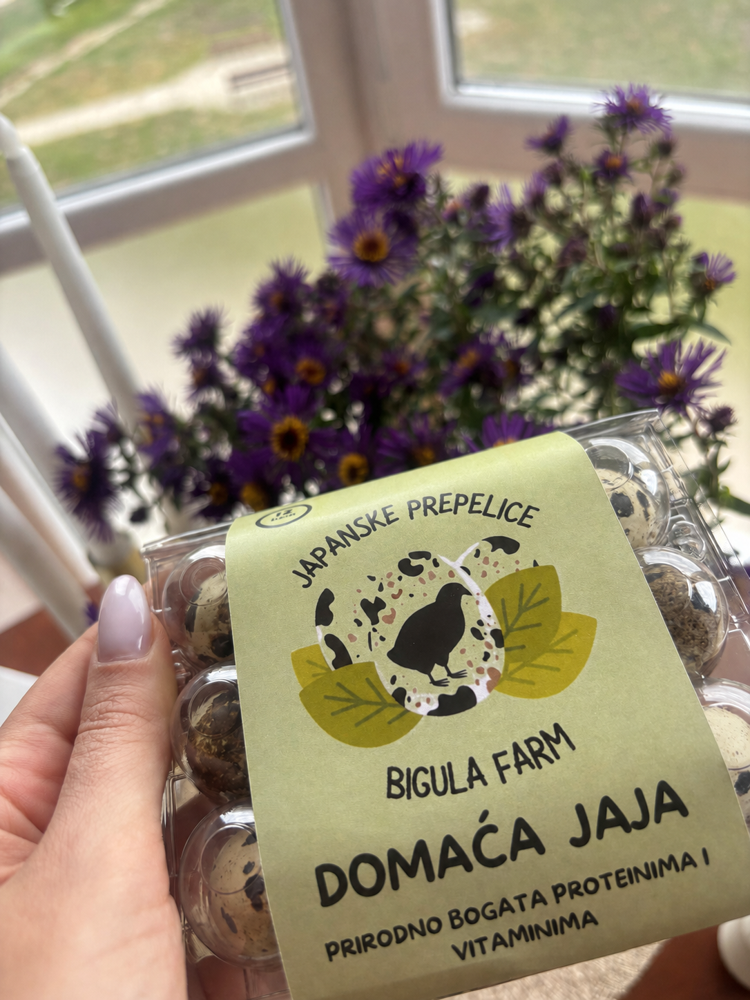

Proteini
Jaja su prirodan izvor proteina i mogu biti deo svakodnevne raznovrsne ishrane.
Prirodno bogata proteinima i vitaminima. Upoznajte jaja japanske prepelice, saznajte više o njihovom nutritivnom sastavu, načinu korišćenja i pogledajte kako možete da ih poručite direktno od nas.

Prepeličja jaja su mala, ali predstavljaju nutritivno bogatu namirnicu koja može biti deo raznovrsne i uravnotežene ishrane.
Jaja su prirodan izvor proteina i mogu biti deo svakodnevne raznovrsne ishrane.
Prepeličja jaja sadrže različite mikronutrijente, uključujući vitamine B grupe.
U jajima se prirodno nalaze različiti minerali koji imaju važnu ulogu u svakodnevnoj ishrani.
Mogu se kuvati, pržiti ili koristiti kao dodatak salatama, predjelima i različitim jelima.

Bigula Farm je mala porodična farma japanskih prepelica iz Novog Kneževca. Posebnu pažnju posvećujemo načinu ishrane prepelica, svežini jaja i pažljivom pakovanju. Hranu za naše prepelice pripremamo sami, mlevenjem i kombinovanjem različitih žitarica.
Jaja sakupljamo i pripremamo za kupce vodeći računa o svežini i kvalitetu svakog pakovanja.
Naše prepelice ne hranimo gotovim koncentratima već prirodnom hranom. Hranu pripremamo sami, mlevenjem i kombinovanjem različitih žitarica koje biramo za našu smešu.
Za slanje koristimo dodatno transportno pakovanje kako bi jaja bila što bolje zaštićena tokom puta.
Kupujete direktno od proizvođača i možete nam se javiti za sve informacije o jajima i poručivanju.
Smešu pripremamo na farmi od pažljivo odabranih i samlevenih žitarica.
Deo svakodnevice na Bigula Farm – od naših prepelica i jaja do pripreme i pakovanja za kupce.
Izaberite pojedinačna pakovanja ili redovnu mesečnu pretplatu na sveža jaja japanske prepelice.
Za slanje se koristi transportna kutija sa 8 pakovanja, odnosno ukupno 96 jaja.
Jedna isporuka mesečno sa ukupno 8 kutija po 12 prepeličjih jaja.
Dve isporuke mesečno po 96 jaja, odnosno ukupno 16 kutija mesečno.
Praktične makaze namenjene lakšem i urednijem otvaranju male ljuske prepeličjih jaja.
Cena kutije od 12 jaja je 200 dinara.
Jaja se šalju u transportnoj kutiji sa 8 pakovanja po 12 jaja, odnosno ukupno 96 jaja.
Kod slanja je moguće plaćanje unapred na račun.
Kod pouzeća troškovi dostave su viši zbog troškova otkupnine.
Cenu dostave i troškova otkupnine određuje pošta.
Vaše poverenje nam je najvažnije. Ovo su stvarne poruke i iskustva naših kupaca.
Kako ste profesionalno zapakovalii svaka
Vam casst
odusevljen samm
ovu turu cu da probam pa se
dogovaramo za pretplatu
Hvala puno!!!
Deca ih obožavaju za doručak, sigurno ih poručujemo opet 🥰
Poštovani/a,
probao sam kod brata jaja od japanske
prepelice vaše proizvodnje i mnogo nam se
svidelo.
Probali smo prepeličja jaja prvi put kod vas i oduševljeni smo! Pakovanje je predivno, vidi se da ulažete trud i ljubav u sve što radite ❤️ Preporučili smo vas već prijateljima
Moj suprug je dobio preporuku od
dr Životija Radisavljevica
( internista onkolog i hematolog i
doktor fizike) izmedju ostalog i
3-5 prepelicjih jaja kuvanih 7
minuta u cilju regulisanja LDL
holesterola.
Kako su prepelicja jaja pored masti
od mangulice i avokada namirnica
najbogatija HDL holesterolom na
prirodan nacin se LDL holesterol
smanjuje. Javljacu Vam i dalje sta
se desava.
Samo da javim da su stigla jaja, hvala Vam na trudu da sve tako lepo upakujete da stigne bezbedno 🙏🥰❤️
Stigla jaja,već sam probala...odlična su ! Hvala Vam...🥰🥰🥰
Zdravo! Htela sam samo da ti zahvalim ,jaja su odlična, deca ih obožavaju i svako jutro pojedemo po nekoliko. Baš se vidi da vodite računa o svemu
Pronađite odgovore na najčešća pitanja o našim prepeličjim jajima, poručivanju, dostavi i pretplatama.
Jedno pakovanje sadrži 12 jaja japanske prepelice, a cena jednog pakovanja je 200 dinara.
Za slanje koristimo transportno pakovanje u koje staje 8 kutija po 12 jaja, odnosno ukupno 96 prepeličjih jaja.
Pakovanja sa jajima dodatno se smeštaju u transportnu kutiju kako bi bila što bolje zaštićena tokom puta.
Posebnu pažnju posvećujemo pakovanju jer su prepeličja jaja mala i osetljiva na udarce tokom transporta.
Kod porudžbina koje šaljemo moguće je plaćanje unapred na račun ili pouzećem.
Troškovi dostave nisu isti kod oba načina plaćanja, jer pošiljke sa otkupninom imaju dodatne troškove.
Cenu dostave određuje pošta.
Standard paket sadrži 96 jaja mesečno, odnosno 8 kutija po 12 jaja.
Možete izabrati pretplatu na 6 ili 12 meseci.
Uz pretplatu na 6 meseci dobijate 1 poklon, a uz pretplatu na 12 meseci 2 poklona.
Premium paket sadrži 192 jaja mesečno.
Za razliku od Standard paketa, Premium paket šaljemo dva puta mesečno po 96 jaja.
Pretplata može trajati 6 ili 12 meseci. Uz 6 meseci dobijate 1 poklon, a uz 12 meseci 2 poklona.
Standard i Premium pretplate plaćaju se unapred.
Konačna cena zavisi od izabranog paketa, trajanja pretplate i načina preuzimanja odnosno dostave.
Jaja čuvajte u frižideru, u odgovarajućem pakovanju, i pridržavajte se datuma i uputstva za čuvanje navedenog na deklaraciji.
Prepeličja jaja mogu se pripremati na različite načine – kuvana, pržena, u salatama, predjelima, doručku ili kao dodatak drugim jelima.
Prepeličja jaja mogu da se piju sirova ili da se umute npr. sa mlekom medom i šećerom radi lakše konzumacije.
Zbog male veličine zanimljiva su i za serviranje i dekoraciju hrane.
Prepeličja jaja imaju malu i specifičnu ljusku, pa praktične makaze omogućavaju jednostavnije i urednije otvaranje jajeta.
Makaze možete poručiti zajedno sa jajima.
Za porudžbine i dodatne informacije možete nas kontaktirati putem Instagrama @prepelice_bigula_farm ili putem kontakta navedenog na sajtu.
Javite nam se za porudžbine prepeličjih jaja, informacije o Standard i Premium pretplatama, dostavi ili makazama za otvaranje jaja.
Najbrže nas možete kontaktirati putem Instagram poruke.